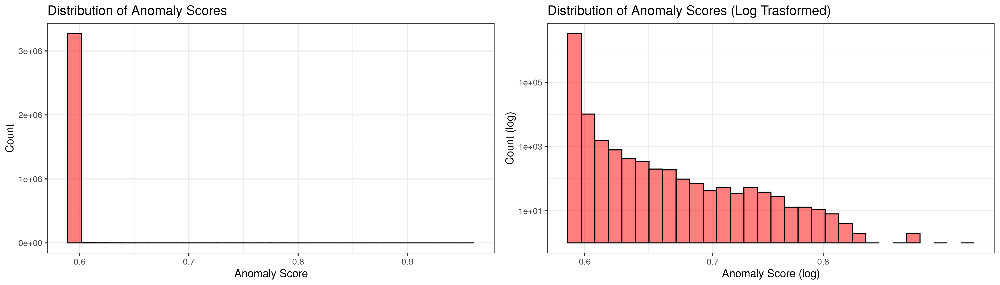
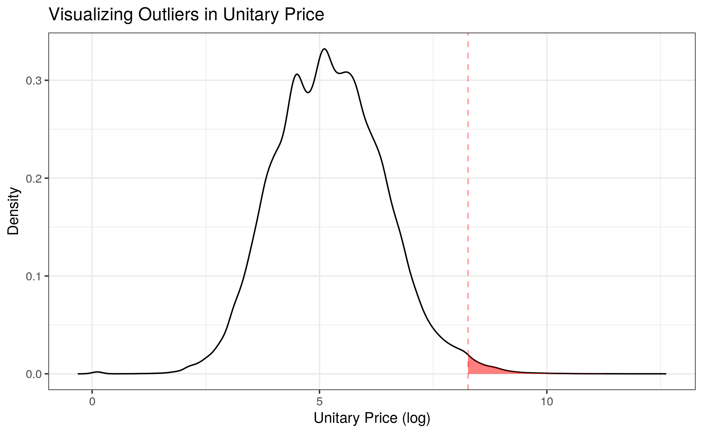

5 Outlier Removal
5.1 Anomaly Scores
As mentioned in the automated EDA documentation, outlier detection is performed using an isolation forest, which assigns to each observation an anomaly score (from 0 to 1). The plots below display histograms of the anomaly scores, with the left-hand side plot being the origial anomaly scores, while the right-hand side plot shows the log-transformed scores.

Based on the significant skew of the anomaly score distribution (with most observations having a score around 0.58), the cutoff point for outliers was chosen to be 0.6. All observations with anomaly scores greater than 0.6 are considered outliers.
5.2 Outlier Statistics
This cutoff point results in 8672 outliers overall, a mere 0.26% of the total items. 4647 tenders (or 3.14% of all tenders) contain at least one item that is a price outlier. These percentages are very low, which is great since we are removing a very small amount of data in exchange for a huge increase in model focus and accuracy.
The minimum price of the outliers (or the price cutoff per se) is 185,525,450 Paraguayan guarani (May 2021) or $27,829.
The plot below displays a log-transformed density plot of the unitary prices, with a red dotted line drawn at the aforementioned cutoff of 185 million guarani. All prices within the red shaded area are considered outliers and removed before training the model.

5.3 Outlier Descriptions
Finally, it is important to actually take a look at the outliers and see what exactly they entailed. Below are the tender and item descriptions of the top 20 most extreme outliers in terms of price. They include things like fuels (diesel, crude oil), road paving services, hydroelectric power plant construction, and cable-stayed bridge construction.
| Tender Description | Item Description |
|---|---|
| Aquisición De Combustible De Petropar | Petroleo Crudo |
| Adquisicion De Combustible | Diesel |
| Llamado Mopc Nº 156/2019 Licitación Publica Nacional Para La Contratación De Empresas Constructoras Para La Construcción De Un Puente Sobre El Rio Paraguay Entre Asunción(Capital) Y Chaco I (Departamento De Presidente Hayes) Ad Referéndum A La Ampliación Presupuestaria | Construccion De Un Puente Sobre El Rio Paraguay Entre Asuncion (Capital) Y Chaco’i (Departamento De Presidente Hayes) |
| Lp01007-14. Obras Civiles E Hidromecánicas, Lote 2 Del Proyecto De Construcción De La Central Hidroeléctrica Yguazú, A Travéz Del Convenio De Préstamo Pg-P15. | Asentamiento / Cimiento De Hormigon Obras Para Presas Hidroeléctricas |
| Para Empresas Precalificadas, Obras Civiles Y Obras Hidromecánicas, Contempladas En El Lote 2, En El Marco Del Proyecto De Construcción De La Central Hidroeléctrica Yguazú, A Través Del Contrato De Préstamo Pg-P15. | Preparacion De Obra |
| Lpi 1561-20.Proyecto De Construcción E Interconexión De La Subestación Valenzuela 500 Kv | Construcción De La Se Valenzuela 500 Kv Y De Las Lineas De Seccionamientoen 500 Y 220 Kv |
| Llamado Mopc Nº 52/2015 Licitacion Publica Internacional De Empresas Constructoras Especializadas En Obras Viales Para La Construccion De La Avenida Costanera Norte De Asuncion - Segunda Etapa Y Conexion De La Avenida Primer Presidente Con La Ruta Nacional N° 9 | Servicio De Construccion De Asfaltado O Pavimentacion |
| Lpi De Empresas Constructoras Para Obras De Rehabilitación Y Mantenimiento De La Ruta Nº 9 Y Accesos, Tramo 3 Lote 5 Y 6 - Ad Referendum A La Reprogramacion Presupuestaria | Servicio De Construccion De Asfaltado O Pavimentacion |
| Lp1542-19 Proyecto De Construcción E Interconexión De La Subestación Yguazú 500 Kv - Ad Referéndum | Construcción De La Subestación En 500/220/23 Kv Yguazú |
| Lpi De Empresas Constructoras Para Obras De Rehabilitación Y Mantenimiento De La Ruta Nº 9 Y Accesos, Tramo 3 Lote 5 Y 6 - Ad Referendum A La Reprogramacion Presupuestaria | Servicio De Construccion De Asfaltado O Pavimentacion |
| Llamado Mopc 118/16. Diseño Y Construccion De Las Oficinas De Gobierno | Diseño Y Construccion De Las Oficinas De Gobierno |
| Licitación Publica Internacional De Empresas Constructoras Para Obras De Habilitación Y Mantenimiento De La Ruta N°9 Y Accesos, Tramo 4: Lote 7. Ad Referéndum Al Pgn 2020 | Mantenimiento / Reparacion De Asfaltado |
| Lp1044-2014 Construcción De La Línea De Transmisión 500 Kv Yacyreta - Ayolas - Villa Hayes | Construcción De La Línea De Transmisión 500 Kv Yacyretá - Ayolas - Vértice N° 20 - (Tramo 1) |
| Lp1044-2014 Construcción De La Línea De Transmisión 500 Kv Yacyreta - Ayolas - Villa Hayes | Construcción De La Línea De Transmisión 500 Kv - Vértice N° 20 - Villa Hayes - (Tramo 2) |
| Llamado Mopc Nº 86/2014 - Licitación Pública Internacional De Empresas Constructoras Especializadas En Obras Viales Para La Habilitación De La Ruta Nacional Nº 9. Tramo Mcal. Estigarribia - La Patria (58 Km) Y Mantenimiento Del Tramo La Patria - Tte Infante Rivarola (115 Km) Fase 2. Ad Referendum A La Aprobacion Del Prestamo Con La Caf | Servicio De Construccion De Asfaltado O Pavimentacion |
| Mopc Nº 52-13 Lpi Emp. Constructoras Especializadas En Obras Viales Precal. P/ La Ejecucion De Las Obras De Rehabilitacion Y Pavimentacion De La Ruta Nº 8 Dr. Blas G. Tramo Caazapa - Yuty Y Accesos | Servicio De Construccion De Asfaltado O Pavimentación |
| Ejecución De Las De Las Obras De Mejoramiento De La Ruta Nº 3 - Gral. Elizardo Aquino, Tramo Bella Vista Norte ? Empalme Ruta N°5. Dpto. Departamento De Amambay Y Concepcion | Mejoramiento De La Ruta Nº 3- Y Ruta Nº 5. Dpto. De Amambay |
| Llamado Mopc Lpi Nº 04/2020. Empresas Constructoras Para La Pavimentacion Del Tramo Desvio Alberdi -Pilar Tramo/ Obra 1 - Alberdi - Rio Tebicuary (51,56 Km) Y Travesia Urbana Villa Franca (2,05 Km) | Construcción Para La Pavimentación Del Tramo Desvio Alberdi-Pilar |
| Llamado Mopc N° 89/2020 Solicitud De Ofertas Mediante Licitación Pública Internacional Para La Ejecución De Obras Viales De Habilitación Y Mantenimiento De Corredores Agroindustriales Ruta De La Leche (Región Occidental) Con Id N° 386.505. Ad Referendum De La Aprobacion Del Contrato De Prestamo. | Cruce Pioneros Paratodo Desde Progresiva 48+400 Incluido El Tramo Paratodo - Cruce Douglas Desde Progresiva 0+000 Hasta Progresiva 5 +100, El Acceso A Campo Aceval Y El Tramo Campo Aceval Progresiva 29 +500 (71,47 Km) |
| Llamado Mopc Nº 40/2018 - Lpi De Empresas Constructoras Para La Rehabilitación Y Pavimentación Del Tramo 1: Desvio Alberdi - Rio Tebicuary (51,56 Km) Y Travesia Urbana Villa Franca (2,297 Km) | Rehabilitacion Y Pavimentacion Del Tramo Desvio Alberdi - Pilar Tramo/Obra 1. Desvio Alberdi-Rio Tebicuary (51,56 Km) Y Travesia Urbana Villa Franca (2,297 Km) |
5.4 Implementation Conclusions
With the current state of the data, a cutoff value of 0.6 was chosen for the anomaly scores (though this can be changed manually in the feature engineering configuration file). All observations that have anomaly scores of at least 0.6 assigned by the random forest algorithm are considered to be outliers and removed from the training dataset before fitting the model.